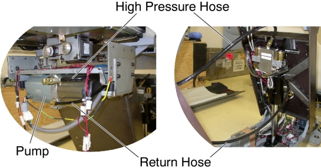
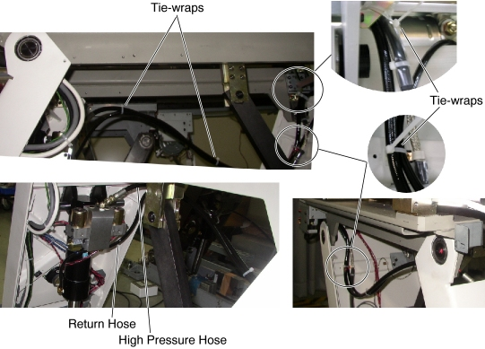
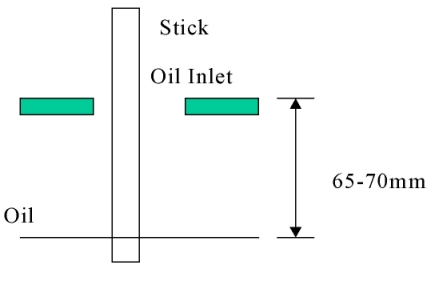

Operating Documentation
Direction 5193574-800, Rev# 22
LightSpeed 7.X Service Methods
Module Version 1.0, Version Date 10/20/08
Operating Documentation |
| Required Persons | Preliminary Reqs | Procedure | Finalization |
|---|---|---|---|
| 1 |
| Last Revised: | 25 June 2008 |
| Item | Qty | Effectivity | Part# | Manufacturer | |
|---|---|---|---|---|---|
| Oil-Pan (2 liters) | 1 | - | - | - | |
| Item | Qty | Effectivity | Part# | Manufacturer |
|---|---|---|---|---|
| Oil | 1 | - | Z9807QD | - |
| Item | Qty | Effectivity | Part# | Manufacturer | |
|---|---|---|---|---|---|
| Hydraulic Return Hose | 1 | - | 5127283 | - | |
Raise the Table to maximum height.
Move the Cradle and IMS to OUT limit position.
Remove power from Table by turning off 120VAC, Axial Drive and HVDC switches on Service Switch Panel.
Remove the following Table covers:
IMS Rear Cover
IMS Side Cover Right/Left)
Front/Rear Side Plate (Right/Left)
Front/Rear Leg Plate (Right/Left)
Illustration 1: Table Covers

Cut any tie-wraps holding the Return Hose.
Disconnect the Return Hose from the hydraulic cylinder. A oil may spill out from the hose. Drain oil in the hose.
Disconnect the Return Hose from the hydraulic pump.
Illustration 2: Hydraulic Hoses

Connect the new Return Hose, one end to the cylinder, and the other end to the pump, then tie-wrap the hose in place.
Illustration 3: Hydraulic Hoses Configuration

Table pump lubrication:
Mark the position of pump upper cover on both sides for re-installation.
Disconnect the cable connectors of the tape switches and touch sensors.
Remove six (6) screws holding the both sides of the pump upper cover, and remove the pump upper cover.
Illustration 4: Pump Upper Cover Removal

Pry a lid up using a flat-head screw driver.
Illustration 5: Lid of Pump

Pour approximately 100cc of the oil into the pump.
Power up the Table from the Gantry Service Switch.
Raise the Table as high as possible.
Turn off the Table from the Gantry Service Switch.
Check the level of the oil by using a stick such as tie-wrap, specification is shown in illustration below.
Illustration 6: Check Oil Level

Secure any loose hoses with tie-wraps.
Raise and lower the Table repeatedly to verify that the hoses do not catch or pull excessively.
Turn off all 3 switches (Axial Drive, HVDC, 120VAC), and re-install the Table covers.